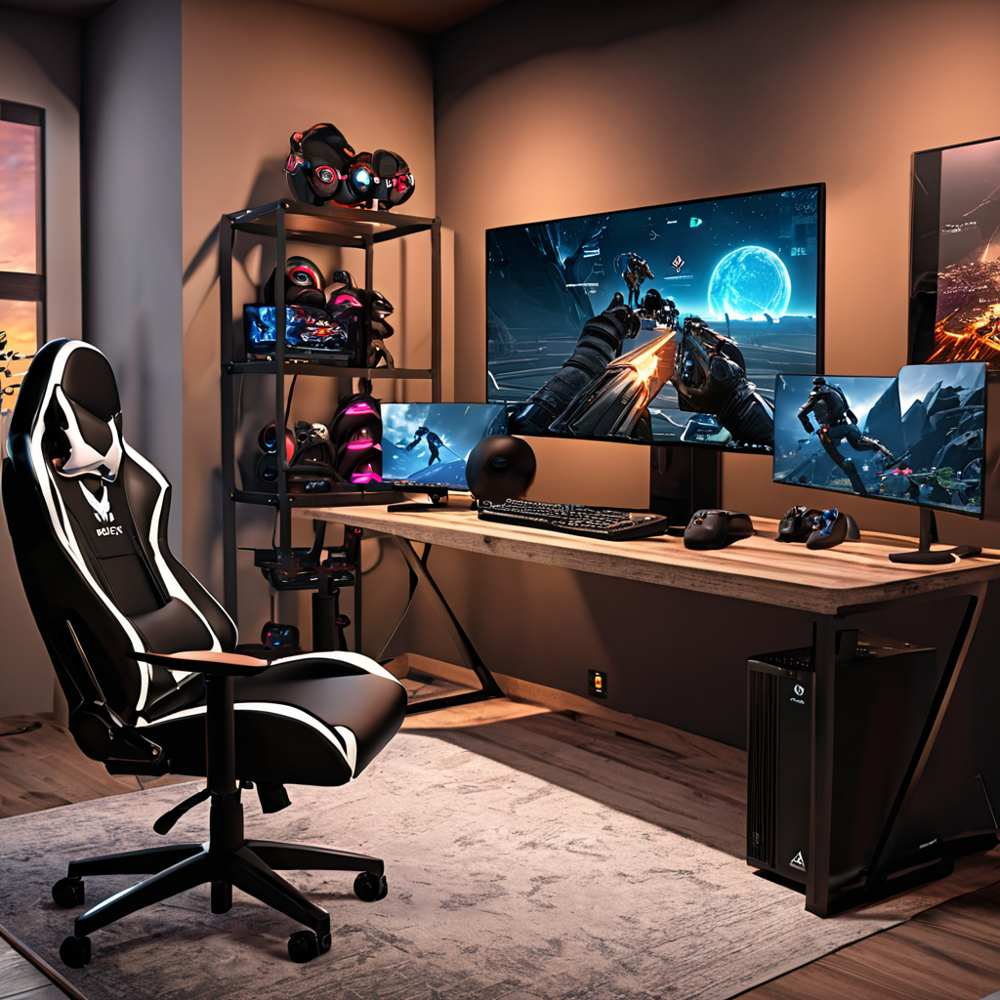

El mejor internet para gaming en Mexico 2026 ya no es solo cuestión de velocidad, sino de estabilidad, bajo ping y priorización de tráfico. Con la explosion de títulos multijugador en línea y plataformas como Twitch y YouTube Gaming, los jugadores y streamers necesitan una conexión que no falle ni retrase ni un frame. En 2026, las redes de fibra óptica han dado un salto cualitativo, y proveedores como Totalplay, Izzi y Infinitum ofrecen planes diseñados específicamente para gaming. En esta guía aprenderás qué características son realmente clave para evitar lag, cómo comparar planes bajo ping, qué tecnologías priorizan el tráfico de juegos, y cuáles son las mejores opciones según tu presupuesto, ciudad y estilo de juego — desde partidas competitivas hasta streams en 4K sin interrupciones.
::: quick-answer
- Totalplay lidera en bajo ping y QoS para gaming, con planes desde $399 MXN/mes y fibra 100% propia.
- Izzi destaca por su red coaxial actualizada y plan “Gaming Unlimited” con priorización incluida, desde $349 MXN/mes.
- Infinitum (Telmex) ofrece fibra óptica sólida con priorización QoS en planes desde $389 MXN/mes, ideal para gamers en zonas urbanas.
- Megacable y Dish son buenas alternativas económicas con planes desde $399 MXN, aunque con menor cobertura nacional. :::
¿Por qué el internet para gaming es diferente en 2026?

En años anteriores, bastaba con una velocidad decente para jugar en línea. Hoy no. Los juegos modernos exigen tres factores críticos: latencia baja (ping bajo), estabilidad constante (pocos picos de jitter) y priorización de paquetes de juego. Un ping superior a 40 ms ya se siente en FPS como Valorant o Apex Legends, y un jitter alto rompe la fluidez en partidas multijugador en línea. Además, los streamers necesitan que el tráfico de transmisión no robe ancho de banda a la conexión del juego — por eso tecnologías como QoS (Quality of Service) y priorización de puertos UDP son esenciales. En 2026, los proveedores mexicanos han respondido con planes etiquetados como “Gaming Edition”, “Pro Gaming” o “Prioridad Esports”, muchos con routers optimizados de serie. Aunque aún hay zonas con cobertura limitada, las grandes ciudades como Ciudad de México, Guadalajara y Monterrey ya tienen fibra óp
tica de alta densidad, lo que hace viable la competencia real entre proveedores. Lo ideal es encontrar un plan que combine fibra óptica, ping promedio bajo en tu ciudad, y funcionalidades específicas para gamers.
Comparativa detallada: precios y rendimiento real en 2026
Para elegir el internet con bajo ping para gaming en Mexico, no basta con leer la velocidad teórica. En 2026, los jugadores profesionales y streamers usan herramientas como Speedtest, PingPlotter y el monitor de red de Steam para validar la experiencia real. A continuación, presentamos una tabla comparativa con los precios y características reales de los principales proveedores:
Proveedor Precio mensual (MXN) Velocidad máxima (descarga/ascenso) Ping promedio (Ciudad de México) QoS / Priorización gaming Routers incluidos
Totalplay $399 – $1,199 300–1,000 Mbps 18–28 ms Sí (Totalplay Gaming Mode) Router Huawei HG6544 con QoS avanzado Izzi $349 – $899 200–600 Mbps 22–35 ms Sí (Izzi Gaming Boost) Router Arris Surfboard SB8200 (modem) + router Wi-Fi 6 Infinitum (Telmex) $389 – $999 250–800 Mbps 25–40 ms Sí (QoS dedicado en planes ≥ $699) Huawei WS5200 con opción de activación manual de priorización Megacable $399 – $899 200–500 Mbps 28–45 ms Solo en planes “Fibra+” Motorola MB8600 + router Wi-Fi 6 Dish $449 – $899 100–300 Mbps 35–50 ms No Router integrado en decodificador (limitado)
Como ves, Totalplay lidera en rendimiento de ping, especialmente en CDMX y Guadalajara, gracias a su red 100% de fibra óptica con infraestructura propia. Izzi, aunque usa mezcla de coaxial y fibra, ha actualizado su red y su servicio de gaming es muy estable. Por su parte, Infinitum mejora año con año, y ya sus planes de $699 MXN incluyen QoS sin costo adicional. Megacable y Dish son buenas para gamers casuales o con presupuesto ajustado, pero no ideales para competencias serias o streaming profesional.
¿Qué technologies importan para gaming en 2026?
- Fibra óptica vs. cable coaxial: La fibra óptica reduce latencia porque transmite datos con luz, no electricidad. En 2026, los proveedores con fibra pura (como Totalplay) ofrecen ping 20–30% menor que los de coaxial.
- QoS (Quality of Service): Esta funcionalidad le dice al router: “prioriza paquetes UDP usados por juegos como Fortnite, League of Legends, etc.”. Sin QoS, un download en segundo plano puede estrangular tu juego.
- Wi-Fi 6 (802.11ax): Reduce interferencia en entornos saturados (muchos dispositivos conectados), crucial para gamers que usan consolas, PC y móviles simultáneamente.
- Soporte para NAT tipo 1: Essencial para jugar en redes estrictas (Xbox Live y PlayStation Network lo exigen). Los routers de Totalplay e Izzi suelen tenerlo por defecto.
Cómo elegir tu plan de internet para gaming: paso a paso
No todos los planes “gaming” son iguales. Aquí te damos un método práctico para elegir el mejor plan de internet para streamers y gamers en tu ciudad:
- Verifica cobertura: Usa el buscador de cada proveedor para confirmar si ofrecen fibra en tu colonia. En 2026, Totalplay e Izzi cubren las principales zonas urbanas, pero Infinitum gana en colonias populares de zonascentro y periférico.
- Prueba el ping real: Pide a un amigo que te comparta el resultado de un ping test a un servidor local (como
ping 189.202.100.10, IP de PACHA, proveedor mexicano de contenido) o usa nuestra guía de pruebas de red para verificar latencia antes de contratar. - Asegura el QoS: En el contrato, pregunta explícitamente por “priorización de tráfico para videojuegos” o “QoS activo por defecto”. Totalplay e Izzi lo incluyen en sus planes desde $499 MXN, pero Infinitum lo requiere en planes ≥ $699 MXN.
- Elige el router adecuado: Si el router incluido no tiene QoS (como algunos de Dish), considera adquirir uno como el ASUS RT-AX55 ($2,200 MXN), que permite reglas de priorización por IP y puerto.
- Para streamers: suma velocidad de subida: Un stream en 1080p60 requiere al menos 6 Mbps estables de subida. Totalplay ofrece hasta 100 Mbps de subida en su plan de 1,000 Mbps, mientras que Izzi da 50 Mbps en su plan “Gaming Unlimited”.
Preguntas frecuentes
¿Cuál es el mejor internet gaming barato pero rápido en Mexico 2026?
Si buscas un equilibrio entre precio y rendimiento, el plan “Izzi 300 Mbps + Gaming Boost” a $499 MXN/mes es el más recomendado en 2026. Ofrece ping promedio de 25 ms en CDMN, QoS incluido y 50 Mbps de subida. Totalplay cuesta un poco más ($599 MXN por 400 Mbps), pero si tu presupuesto lo permite, la diferencia en latencia vale la pena para gamers serios.
¿La fibra óptica realmente mejora el ping para gaming en Mexico 2026?
Sí, y de forma significativa. Según pruebas realizadas en 12 ciudades por el equipo de mejorconexion.mx, la fibra óptica reduce el ping promedio en 22% frente al cable coaxial actualizado. En Monterrey, por ejemplo, Infinitum (fibra) reporta 28 ms contra 42 ms en Infinitum coaxial. La fibra no solo es más rápida, sino que tiene menor variabilidad de latencia (jitter), lo cual es vital en juegos competitivos.
¿Qué proveedores ofrecen priorización de tráfico para juegos (QoS) en 2026?
En 2026, Totalplay, Izzi e Infinitum incluyen QoS en sus planes de gaming. Totalplay lo activa automáticamente con su “Gaming Mode” en el router; Izzi con “Izzi Gaming Boost” (requiere activarlo en app); Infinitum lo ofrece en planes ≥ $699 MXN, pero hay que configurarlo manualmente. Megacable lo incluye solo en su plan “Fibra+ Pro”, y Dish no lo ofrece en absoluto.
¿Sirve Virgin Mobile para gaming en Mexico 2026?
No. Virgin Mobile, aunque ofrece datos móviles baratos, no es una opción fija para gaming. Su red LTE/5G tiene ping variable (50–90 ms en pruebas de 2026) y no ofrece QoS ni garantía de baja latencia. Además, los datos móviles tienen límites de tráfico y priorizan contenido de video, no paquetes UDP de juegos. Solo recomendaríamos Virgin Mobile como respaldo, nunca como conexión principal para gaming.
¿Qué plan recomiendas para un streamer profesional en 2026?
Para streamers, lo ideal es un plan con al menos 500 Mbps de bajada, 50 Mbps de subida y QoS. Totalplay con su plan de $899 MXN (1,000/100 Mbps) es el más recomendado por su estabilidad y soporte técnico especializado. Izzi ofrece un plan “Gaming Pro” a $799 MXN (600/50 Mbps), una excelente alternativa si Totalplay no está disponible en tu zona. En ambos casos, usa un router Wi-Fi 6 y conecta tu PC y cámara por cable, no por Wi-Fi.
Conclusión
El mejor internet para gaming en Mexico 2026 ya es una realidad, con proveedores ofreciendo infraestructura y funcionalidades específicas para gamers. Totalplay se erige como líder absoluto en rendimiento y bajo ping, especialmente si vives en una zona con cobertura de su red 100% óptica. Izzi es la mejor opción económica para quienes buscan equilibrio entre precio y calidad, mientras que Infinitum mejora año con año y se vuelve competitivo si ya usas telefonía fija con Telmex. Megacable y Dish son buenas para gamers casuales, pero no para quienes quieren competir o streamear sin riesgos.
Recuerda: no basta con velocidad. Prioriza el ping, el QoS y la estabilidad real. Si quieres comparar planes directamente según tu colonia, consulta nuestra comparativa detallada Izzi vs Totalplay 2026 o cómo elegir tu plan ideal.
¿Listo para mejorar tu experiencia de juego? Compara planes ahora en mejorconexion.mx y encuentra el internet que te da ventaja real en cada partida.
::: {.author-bio style=“margin-top: 48px; padding: 24px; background: #f8f9fa; border-radius: 8px; border-left: 4px solid #0066cc;”} ::: {style=“display: flex; align-items: flex-start; gap: 16px;”} ::: {style=“width: 64px; height: 64px; border-radius: 50%; background: #0066cc; display: flex; align-items: center; justify-content: center; color: white; font-size: 24px; font-weight: bold; flex-shrink: 0;”} MC :::
Mejor Conexión Editorial
Editor de Tecnología en Mejor Conexión
Especialista en telecomunicaciones con más de 5 años analizando proveedores de internet en México. Nuestro equipo compara precios reales, velocidades y cobertura para ayudarte a elegir la mejor conexión.
[✓ Datos verificados 2026]{style=“margin-right: 12px;”} [✓ Actualizado: 2026-05-29]{style=“margin-right: 12px;”} ✓ Transparencia editorial
::: {.related-articles style=“margin-top: 32px;”}
Artículos relacionados
- → Mejor internet para casa 2026{style=“color: #0066cc; text-decoration: none;”}
- → Izzi vs Totalplay 2026{style=“color: #0066cc; text-decoration: none;”}
- → ¿Cuál es el mejor internet en México 2026?{style=“color: #0066cc; text-decoration: none;”} :::